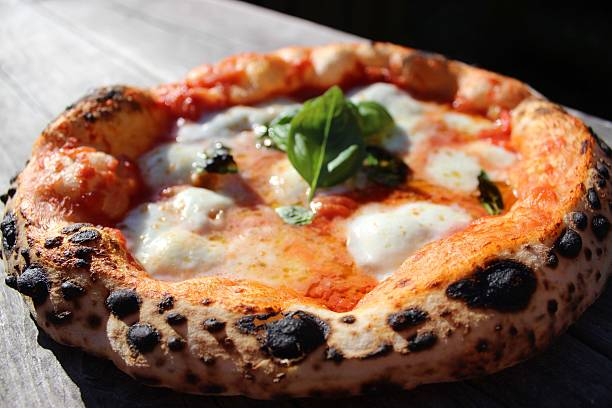

Pizza napoletana

Description
Pizza whose origin goes back to Naples, Italy. It is made with over 24 hour fermentation periods, giving it it's characteristic crust.
Ingredients
- Flour
- Water
- Salt
- Yeast
- Mozzarella
- Tomato sauce
- Basil
- EVO
Steps
- Mix the yeast and the water, and go incorporating the flour little by little
- Once incorporated a fair amount of flour, add the salt
- At this point you should only put 2/3 of the flour
- Let ferment in bulk inside the fridge for at least 24 hours
- Once bulk fermented, take out of the fridge and add the rest of the flour
- Mix thoroughly and knead the dough for around 10 to 15 minutes
- Let the dough rest 10 to 20 minutes and give it a little bit more kneading action until its smooth, nice and round
- Cut the dough into 270g balls
- Let ferment for 3 to 4 hours depending on temperature until ready to cook
- Stretch, add tomato sauce, mozzarella, basil and EVO and cook in wood oven for 1 to 2 minutes